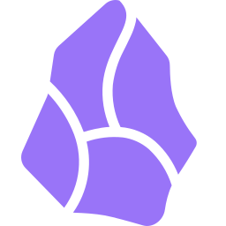

An Obsidian Alternative: Faster Capture Without the Setup
ChillNote vs Obsidian: Feature Comparison

ChillNote
Strengths
- ✓ Much easier to start using immediately
- ✓ Faster on mobile when you want to capture first and organize later
- ✓ Voice-to-Markdown lowers the friction of idea capture
- ✓ AI-native tools help shape notes without plugin hunting
- ✓ Better for people who want less system maintenance
Drawbacks
- × Fewer advanced PKM customization layers
- × Not trying to be a deep plugin ecosystem

Obsidian
Strengths
- ✓ Powerful Markdown-based knowledge management
- ✓ Backlinks, graph view, and local-first workflows
- ✓ Huge plugin ecosystem for advanced customization
Drawbacks
- × Steeper learning curve for new users
- × More setup, tuning, and maintenance over time
- × Slower for quick mobile capture when compared with simpler apps
Core Differences
Why ChillNote Feels Easier Than Obsidian
Start Capturing Before Building a System
Obsidian is powerful, but many people end up designing a whole knowledge system before they even start taking notes. ChillNote flips that around. The first priority is capturing the note right now, not designing the perfect vault.
Mobile Friction Is Much Lower
Obsidian feels strongest when you enjoy tweaking your setup and working deeply inside Markdown files. ChillNote works better when you are on your phone and need one quick, dependable place to save the thought.
AI Without the Plugin Scavenger Hunt
In Obsidian, advanced workflows often come from community plugins and custom setups. ChillNote bakes the AI-native direction into the product, which makes it feel more approachable if you want help without system assembly.
Better for Momentum, Not Just Knowledge Architecture
Obsidian is excellent if you love structured personal knowledge management. ChillNote is stronger if your main goal is momentum: capture often, clean up later, and keep moving through the day.
Want Markdown Without All the Setup?
Try ChillNote when you want capture speed first and deeper structure second.